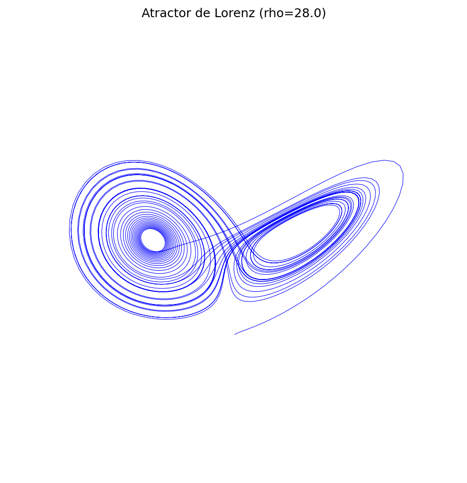

Simulación de Sistemas Dinámicos en AWS
Integración numérica de un modelo caótico procesado en Amazon EC2.
dx/dt = σ(y - x)
dy/dt = x(ρ - z) - y
dz/dt = xy - βz
Parámetros actuales:
σ = 10.0 | ρ = 28.0 | β = 2.67
